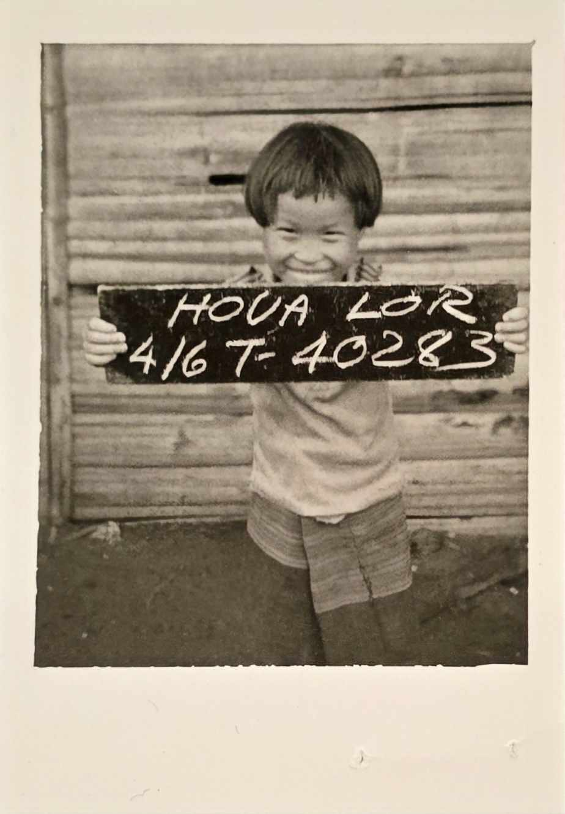

CRES 001 Final Project
My Conclusion and Inspiration
My Conclusion
Two key concepts that I heavily relied on within my piece are intersectionality, and social settler colonialism. With intersectionality I used it to analyze how different aspects of identity intersect and change individuals within the Hmong community. As for social settler colonialism, it helped me understand the lasting impacts of historical traumas on the community. Collectively though both have taught me the generational trauma that hmong people are still recovering from. I used sources like the class lectures specifically week 9 and 10 but also utilized additional readings to deepen my understanding of the subject matter like Kimberle Crenshaw's "Why Intersectionality Can't Wait" published by the Washington Post. I concluded these important points with interviews of my own uncles and family members along with family friends to get inspiration from personal interviews and be able to provide a more comprehensive understanding of the complex issues faced by the hmong community. These sources brought the historical context and personal perspectives necessary to fully grasp the impact of generational trauma of the Hmong community. While bringing a more personalized understanding of the generational gap and the interesting intersectionality of the two generations from the ethnic and cultural identity to the socioeconomic disparities within the Hmong community. The unique combination of class lectures and these interviews have provided valuable insight into the complexity of intergenerational relationships and the importance of cultural preservation within the Hmong community.
My Inspiration

1973 - 2025
I know many of you dont know me or know my life but this is my mom and she is my inspiration. Saddly this past month i was gone for her funeral as she unfortunately passed away. She was the inspiration behind my project. She led me to being who I am today thanks to her love and kindness.